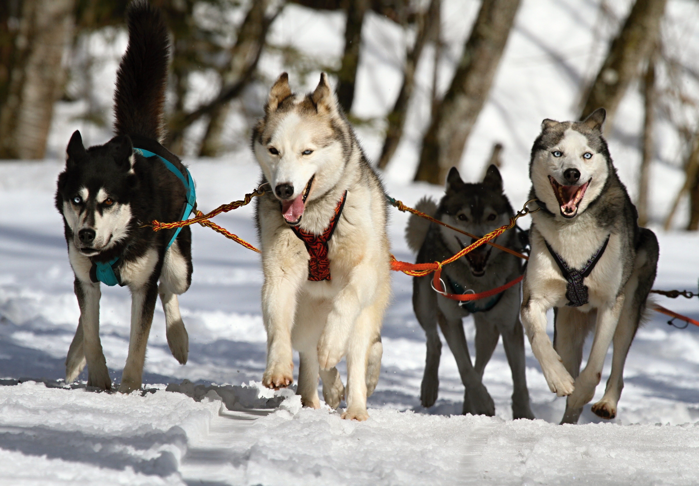

Para criar um link, deve-se utilizar a tag 'a' de 'achor' ou ancora.
Exemplo e um link que não vai para nenhum site.
Clique aqui.Exemplo de links que levam para sites
Para impedir que um link abra a pagina na mesma janela, é possivel utilizar o atributo 'target' da tag, com o valor '_blank'
Assim impedimos o link de ser abreto na mesma aba de nagevador que o site esta.
Links utilizando target
Tamem é possivel utilizar uma imagem como link. Para isso, devemos colocar a tag 'img' entre as tags 'a'.

Tambem é possivel apontar o link para dentro de outras paginas do projeto.
Por exemplo: